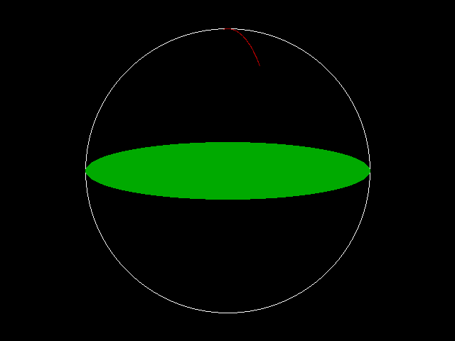

Circle

Instruction graphique pour tracer un cercle
Circle [target,] [STEP] (x,y), radius[, [color][,[start][, [end][, [aspect][, F]]]]]
target
Circle trace un cercle, une ellipse ou un arc de cercle d'après les paramètres fournis.
target spécifie le buffer où l'on dessine. target peut être une image créée avec ImageCreate ou Get (Graphics). Si omis, target est par défaut la page valide de l'écran de travail. (Voir ScreenSet)
Le centre de la figure est placé sur la surface destination en (X,Y).
Radius donne le rayon de la figure. Si aspect ratio est utilisé, le plus grand rayon doit être indiqué ici.
Color correspond à l'attribut de couleur, qui est spécifique au mode (voir Color et Screen (Graphics) pour des détails). Si omis, la couleur de premier-plan définie par Color est utilisée.
L'option STEP spécifie que X et Y sont relatifs à la position du curseur graphique.
start et end sont des angles en radians. Valeurs de -2PI à 2PI; si vous spécifiez un angle négatif, sa valeur change de signe et une ligne est tracée du centre jusqu'au point de l'arc de cercle. end angle peut être inférieur à start angle. Si vous omettez start et end, un cercle/ellipse complet est tracé; si vous spécifiez start mais pas end, end prend la valeur 2PI; si vous spécifiez end mais pas start, start prend la valeur 0.
aspect est le ratio d'aspect, ou le ratio du y sur le x du rayon. La valeur par défaut est la valeur requise pour tracer un cercle parfait à l'écran, en gardant le ratio d'aspect des pixels. Cette valeur peut être calculée comme ceci:
ratio = (y_radius / x_radius) * pixel_aspect_ratio
Où pixel_aspect_ratio est le ratio de la largeur sur la hauteur dans le mode courant, correspondant à un moniteur 4:3 standard. Si le ratio d'aspect est inférieur à 1, le rayon est le rayon x; s'il est supérieur ou égal à 1, le rayon est le rayon y.
F est l'indicateur de remplissage. Si vous le spécifiez, le cercle/ellipse sera rempli avec la couleur sélectionnée. Ceci est sans effet dans le cas d'un arc de cercle.
Le système de coordonnées mis en place par Window et/ou View (Graphics) modifie l'opération de dessin; le découpage (clipping) mis en place par View s'applique aussi. Quand Circle termine le tracé, le curseur graphique courant est positionné sur le centre donné.
Syntaxe
Circle [target,] [STEP] (x,y), radius[, [color][,[start][, [end][, [aspect][, F]]]]]
Paramètres
target
spécifie le tampon sur lequel on dessine.
STEPindique que les coordonnées sont relatives
(x, y)coordonnées du centre du cercle.
radiusrayon
colorl'attribut de couleur.
startl'angle de départ
endl'angle de fin
aspectaspect ratio
Findicateur de mode de remplissage
Description
Circle trace un cercle, une ellipse ou un arc de cercle d'après les paramètres fournis.
target spécifie le buffer où l'on dessine. target peut être une image créée avec ImageCreate ou Get (Graphics). Si omis, target est par défaut la page valide de l'écran de travail. (Voir ScreenSet)
Le centre de la figure est placé sur la surface destination en (X,Y).
Radius donne le rayon de la figure. Si aspect ratio est utilisé, le plus grand rayon doit être indiqué ici.
Color correspond à l'attribut de couleur, qui est spécifique au mode (voir Color et Screen (Graphics) pour des détails). Si omis, la couleur de premier-plan définie par Color est utilisée.
L'option STEP spécifie que X et Y sont relatifs à la position du curseur graphique.
start et end sont des angles en radians. Valeurs de -2PI à 2PI; si vous spécifiez un angle négatif, sa valeur change de signe et une ligne est tracée du centre jusqu'au point de l'arc de cercle. end angle peut être inférieur à start angle. Si vous omettez start et end, un cercle/ellipse complet est tracé; si vous spécifiez start mais pas end, end prend la valeur 2PI; si vous spécifiez end mais pas start, start prend la valeur 0.
aspect est le ratio d'aspect, ou le ratio du y sur le x du rayon. La valeur par défaut est la valeur requise pour tracer un cercle parfait à l'écran, en gardant le ratio d'aspect des pixels. Cette valeur peut être calculée comme ceci:
ratio = (y_radius / x_radius) * pixel_aspect_ratio
Où pixel_aspect_ratio est le ratio de la largeur sur la hauteur dans le mode courant, correspondant à un moniteur 4:3 standard. Si le ratio d'aspect est inférieur à 1, le rayon est le rayon x; s'il est supérieur ou égal à 1, le rayon est le rayon y.
F est l'indicateur de remplissage. Si vous le spécifiez, le cercle/ellipse sera rempli avec la couleur sélectionnée. Ceci est sans effet dans le cas d'un arc de cercle.
Le système de coordonnées mis en place par Window et/ou View (Graphics) modifie l'opération de dessin; le découpage (clipping) mis en place par View s'applique aussi. Quand Circle termine le tracé, le curseur graphique courant est positionné sur le centre donné.
Exemple
' Valide mode 640x480, 256 couleurs
Screen 18
' Trace un cercle au centre
Circle (320, 240), 200, 15
' Trace une ellipse pleine
Circle (320, 240), 200, 2, , , 0.2, F
' Trace un petit arc
Circle (320, 240), 200, 4, 0.83, 1.67, 3
Sleep
Screen 18
' Trace un cercle au centre
Circle (320, 240), 200, 15
' Trace une ellipse pleine
Circle (320, 240), 200, 2, , , 0.2, F
' Trace un petit arc
Circle (320, 240), 200, 4, 0.83, 1.67, 3
Sleep

Différences avec QB
- FreeBASIC utilisant un algorithme différent de QB pour le tracé ellipse/arc,
le résultat peut être légèrement différent pour chaque pixel.
- L'indicateur F pour remplir les cercles/ellipses est nouveau dans FreeBASIC.
- target Nouveau pour FreeBASIC
Voir aussi